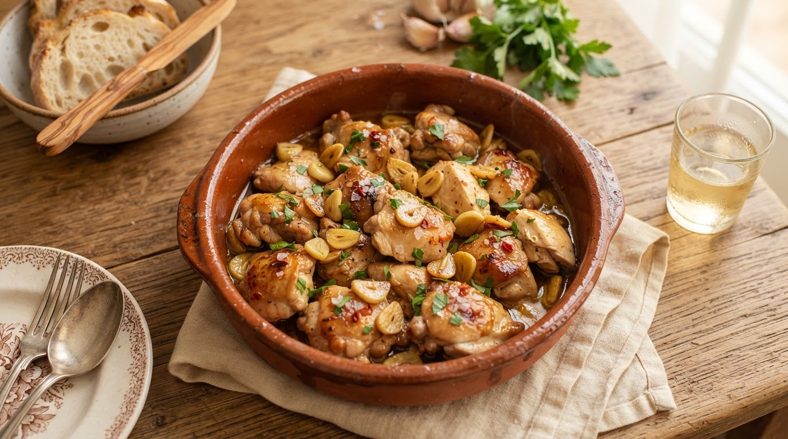

Sazón · C3 v2 · dos ajustes
Contraste en oscuro y la imagen de IA dentro de la tarjeta
Dos cosas que pediste: que las tarjetas destaquen sobre el fondo en modo oscuro, y que el interruptor de imágenes por IA haga que la imagen aparezca en la tarjeta.
1 · Modo oscuro: por qué la tarjeta no destaca (con números)
Con los tokens actuales el contraste tarjeta/fondo es de 1,15:1
(
#312720 sobre #241C16). El mínimo que pide WCAG para distinguir límites de
interfaz es 3:1: hoy la tarjeta no se distingue, y el efecto empeora con el filete de
color, porque tampoco hay sombra visible en fondo oscuro.
Opción A · mínima (solo borde)
Arroz · Latina
Arroz con
pollo criollo
pollo criollo
pollo · arroz · zanahoria
30 min · Media92%
Desayuno · Española
Tortilla
de patatas
de patatas
huevo · patata · cebolla
25 min · Fácil98%
Tarjeta/fondo 1,15:1 · borde/fondo 2,0:1
→ por debajo de 3:1. Cambio de una línea, pero sigue justo.
Opción B · borde claro (recomendada)
Arroz · Latina
Arroz con
pollo criollo
pollo criollo
pollo · arroz · zanahoria
30 min · Media92%
Desayuno · Española
Tortilla
de patatas
de patatas
huevo · patata · cebolla
25 min · Fácil98%
Superficie subida a
#3A2E26 · borde/fondo 3,26:1
→ cumple 3:1. Es borde de tarjeta, no token global:
no toca navegador, hojas ni pantallas.Opción C · tinte cálido por cocina
Arroz · Latina
Arroz con
pollo criollo
pollo criollo
pollo · arroz · zanahoria
30 min · Media92%
Legumbres · India
Curry de
garbanzos
garbanzos
garbanzos · tomate · coco
35 min · Media88%
El degradado de la cocina al 12–16 % sobre la superficie: separa por
color, refuerza identidad y además anticipa la imagen. La luminancia no cambia.
Mi recomendación: B + C juntas. Borde claro (3,26:1, cumple el mínimo) más el tinte cálido de la
cocina, que ya existe en el filete. Todo a nivel de tarjeta: no hay que cambiar
darkSurface en DESIGN.md/Color.kt, así que no se mueven el
navegador, las hojas, el Perfil ni las otras pantallas. Si prefieres el cambio global
(darkSurface más claro), es una línea, pero afecta a todas las superficies.
2 · La imagen de IA dentro de la tarjeta
Con el interruptor apagado la tarjeta es tipográfica (lo que ya viste). Con el interruptor
encendido y una imagen disponible, la imagen pasa a ser capa de fondo del hueco y la
tipografía se queda encima con el scrim que
DESIGN.md ya exige para el contraste
sobre fotografía. Dos formas de colocarla:
- L1 · a sangre: la imagen llena el 16:10 y el texto va encima (ingredientes en pastilla traslúcida). Máximo impacto, mínimo sitio para las 3 filas.
- L2 · banda sólida: la imagen arriba con categoría y título; los ingredientes con cantidad bajan a una banda de superficie. Contraste perfecto y las cifras tabulares se leen sin ruido.
Interruptor OFF · tipográfica (claro)
Arroz · Latina
Arroz con
pollo criollo
pollo criollo
pollo · arroz · zanahoria
30 min · Media92%
Cero red. Cero cuota. Nunca miente.
Interruptor ON · L1 a sangre (claro)

Arroz · Latina
Arroz con
pollo criollo
pollo criollo
pollo · arroz · zanahoria
30 min · Media92%
La imagen entra con el crossfade de 250 ms ya implementado: la tipografía
es la capa base, así que no hay salto de layout.
Interruptor ON · L1 a sangre (oscuro)
Arroz · Latina
Arroz con
pollo criollo
pollo criollo
pollo · arroz · zanahoria
30 min · Media92%
En oscuro el scrim va más cerrado. La tarjeta con imagen se separa sola del fondo.
Interruptor ON · L2 banda sólida (claro)

Pollo · Española
Pollo al ajillo
Pollo 4 muslos
Ajo 6 dientes
Vino blanco 100 ml
40 min · Fácil · 4 pers.95%
El hueco con imagen es 16:9 y la banda de ingredientes va en superficie:
contraste garantizado y las cantidades tabulares limpias.
3 · Cómo se comporta el interruptor (y por qué esto te quita la imprecisión)
| Estado | Qué hace la tarjeta | Cuota / red |
|---|---|---|
| OFF (lo que quieres) | Tipográfica + marca de agua del glifo + tinte de cocina + filete | 0 |
| ON, imagen disponible | Imagen de fondo (L1 o L2) con scrim y tipografía encima | 1 generación, cacheada después |
| ON, aún no ha llegado | Tipográfica; la imagen entra con crossfade. Sin hueco ni salto | 0 extra |
| ON, falla / timeout / tope agotado | Se queda tipográfica, en silencio | 0 |
| Semilla (assets) | Fuera de la tarjeta: ya no hace falta foto de categoría | −6,4 MiB de APK |
Lo importante: con C3 desaparece el nivel de foto de categoría en la tarjeta. Si no hay
imagen generada, no cae en una foto genérica que no corresponde al plato: cae en tipografía
honesta. Es decir, esta dirección arregla el problema 2 que me planteaste al principio
(imagen preestablecida imprecisa) y a la vez deja el problema 1 (cuota) como algo que solo
ocurre si el usuario enciende el interruptor, con tope por sesión y caché ya implementados.
Dos consecuencias técnicas que habrá que reflejar en la spec:
RecipeArtworkdeja de ser «la imagen de la receta» y pasa a ser el proveedor de la capa de fondo (con crossfade), mientras la tarjeta aporta la tipografía. Misma firma, otro rol: los 5 puntos de uso se revisan.- Si el interruptor está OFF, la cadena local de
recipe-photosno se consulta: confirmar si se retira del todo (y con ella los 6,4 MiB) o se conserva solo para el Detalle.
4 · Qué falta en la spec
| Decisión | Opciones |
|---|---|
| Contraste en oscuro | A · solo borde · B · borde claro (3,26:1) · C · tinte de cocina · recomendada B+C |
| Colocación de la imagen | L1 a sangre · L2 banda sólida · L2 solo en Detalle |
| Ingredientes en el carrusel | 1 línea (16:10) · subir la tarjeta a 3:2 con las 3 filas |
| Assets locales | retirar los 6,4 MiB · conservarlos solo para el Detalle |
| Sombra en oscuro | sombra actual (casi invisible) · borde como elevación |
Bocetos generados en local; no son assets del producto ni una spec. Las imágenes de las tarjetas
«ON» son las fotos reales del APK, usadas solo para ver cómo lee la tipografía encima. La dirección
visual aprobada sigue siendo DESIGN.md. Fichero fuera de control de versiones
(preview/).